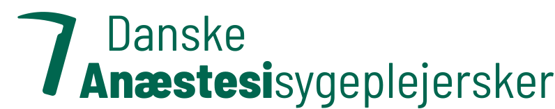

Vores holdning til 300-timers-tillægget
300timer.dk bygger på en minutiøs gennemlæsning af den kommenterede vejledning om vagttillægget som Danske Regioner har udgivet. Aftalen burde være indgået for at belønne sundhedspersonale i de timer, hvor de er væk fra deres familier for være der for patienter døgnet rundt. I stedet oplever vi, at vi under skæve vagter forventes at være fuldt ud til rådighed for akutte situationer – samtidig med at vi modregnes i de timer, hvor vi er på standby fra vagtværelse.
Den situation mener vi er helt urimelig at sætte anæstesisygeplejersker i. Vi bør aflønnes for alle de timer, hvor vi står til rådighed for vores patienter. Dette vil vi kæmpe for at ændre under de kommende OK26-forhandlinger.
Vi har lavet denne beregner først og fremmest som en service og hjælpende hånd til vores medlemmer. Den er dog også en visualisering af, hvor mange vagter det kræver at opnå det årlige tillæg, og hvor meget mere det kræver af sygeplejersker, hvis lokalaftale ikke tæller rådighedstimer på vagtværelse med.
Hvem vi er
Danske Anæstesisygeplejersker (DA) arbejder for at fremme anæstesisygeplejerskers interesser gennem samarbejde og erfaringsudveksling på tværs af hele Danmark, især i forhold til lokale lønforhandlinger. Et hovedfokus er at sikre et fast og højere løntillæg for specialuddannelsen i det offentlige sundhedsvæsen, et tillæg der afspejler uddannelsens kompleksitet og gør faget mere attraktivt for rekruttering og fastholdelse.
Vi er aktive i medierne for at skabe opmærksomhed om anæstesisygeplejerskens arbejde og de udfordringer, vi møder. Foreningen arbejder desuden for at forbedre det generelle vilkår og fremme anæstesisygeplejerskers virke. Vores mål er at opnå formel international anerkendelse og opgradering uddannelsen til masterstatus.
Følg vors arbejde på vores hjemmeside, vores facebook-side eller vores Instgram-profil.